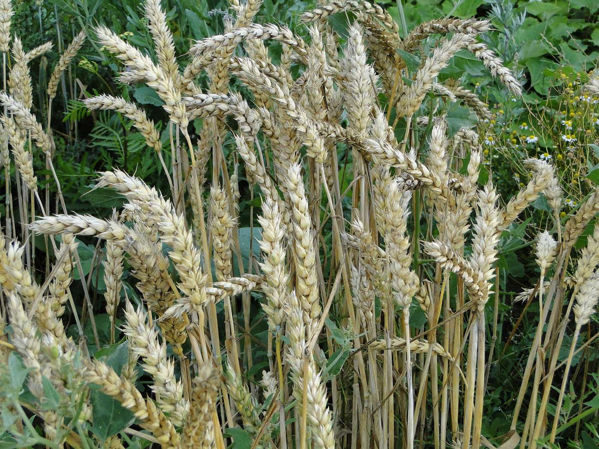
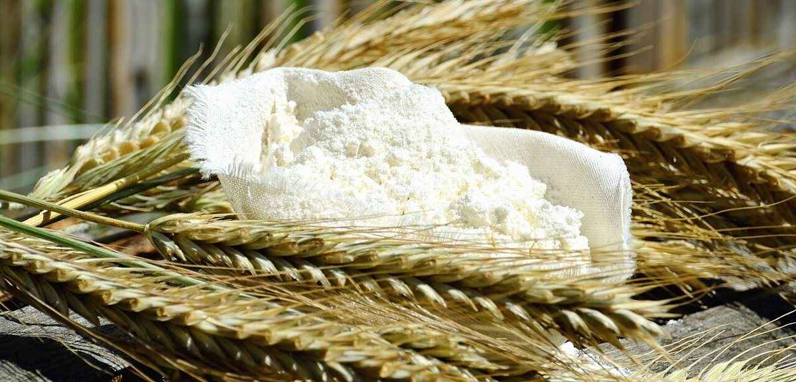

店のこと
確認できていること
お店の考えや歴史など、詳しいことは準備中です。いまお伝えできるのは所在地とInstagramのみです。


このサイトのつくり
ふいごの図は、制作側の遊び心
ホームの図は、手動ふいごの側面を図にしたものです。制作側の連想で、お店の理念・由来とは無関係です。実際の道具の仕様を示すものでもありません。
下の六つは、図に振った番号の説明です。
部位の説明
番号と名前
- 1吹き口(ノズル)先に向かって細くなる、風を一か所に集めて送り出す筒。
- 2蛇腹(ひだ革)上板と下板のあいだに折りたたむ、伸び縮みする革の部分。
- 3上板押し下げる側の板。空気を押し出す力を受けとめる。
- 4下板土台になる側の板。上板と向かい合って空気をはさむ。
- 5取っ手上板につけた、手で押し引きするための持ち手。
- 6吸気弁広がるときだけ開いて、空気を取り込む小さな弁。


写真について
イメージ写真の扱い
ページ内の写真はフリー素材で、国外または撮影地不明のものです。実際の店内や商品の写真は、お店からご提供いただいたものに差し替えます。
写真はパンやコーヒー豆などのイメージです。お店のものではなく、お店で提供している商品を示すものでもありません。